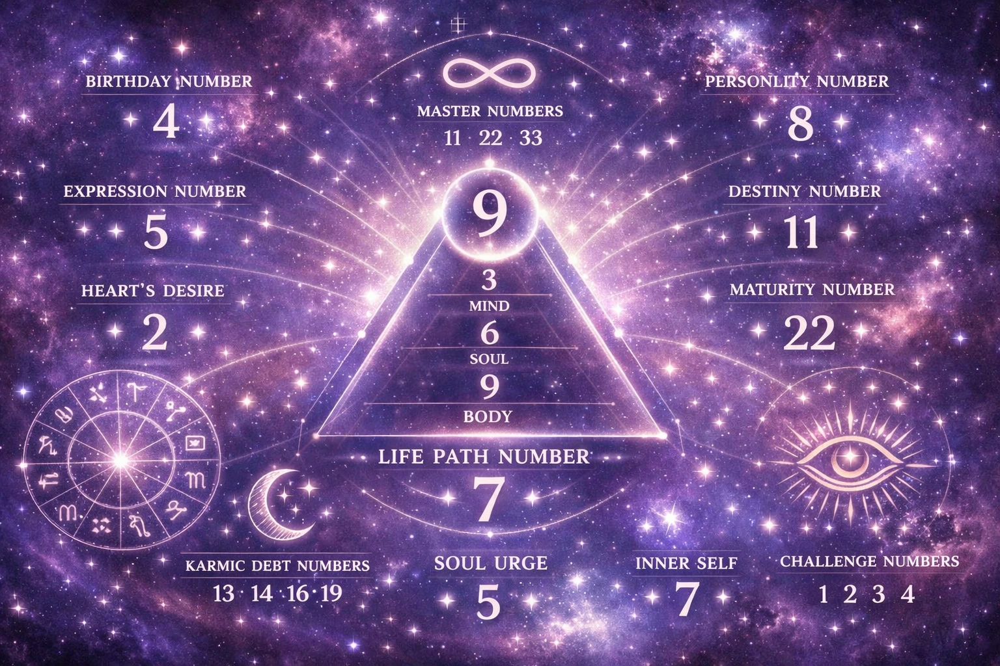

Numerology is the belief in an occult, divine or mystical relationship between a number and metaphysical phenomena or ideas. It is also the study of the numerical value, via an alphanumeric system, of the letters in words and names.
Every number has a unique vibration and energy that can influence our lives in profound ways.There come the angel numbers.They are repeated numbers tha hold messages from the universe.The following are the most common.

Repeatedly seeing this number might signify that it’s time to focus on your thoughts and intentions, as they have the power to manifest into reality. This number is a reminder that your thoughts create your reality, and you have the power to create the life you desire.Also it's a reminder to focus on positive thoughts , as the negatives might as well manifest in real life.
The angel number 2222 is a symbol of balance, manifestation, and partnership in its highest form. When you keep seeing the number 2222, it is a sign from the angels that you are on the right path.
Angel number 3333 is a powerful message from the angels to you. It typically carries messages of unconditional love, gratitude, and encouragement. When 3333 appears to you, it could mean that the universe is sending you a message of hope.
The 4444 angel number carries a deeply spiritual message. It’s often interpreted as a sign that your guardian angels or spiritual guides are near, offering protection and support. The number suggests you’re on the right path, even if things feel challenging.
When you repeatedly see the 5555 Angel Number, it is a sign of courage , transformation and new beginnings.
That's a number often associated with balance, love, and harmony. Seeing 6666 repeatedly can be a reminder from the angels to focus on restoring equilibrium in your life, especially when things may feel chaotic or off-track.
Angel number 7777 symbolizes perseverance and to keep working toward your current goals, rather than starting fresh with new endeavors. It’s a sign to connect with a higher power, open up to your loved ones, and have gratitude for your achievements so far.It's also a sign of luck and blessings.
The 8888 angel number is a powerful cosmic signal, brimming with promise and potential. Whether it’s guiding you toward love, career success, financial abundance, or personal growth, it’s a reminder that you’re supported by the universe.Also it often signifies stability.
The angel number 9999 signifies completion, transformation, and the start of a new life chapter, urging you to release the past and embrace spiritual growth.